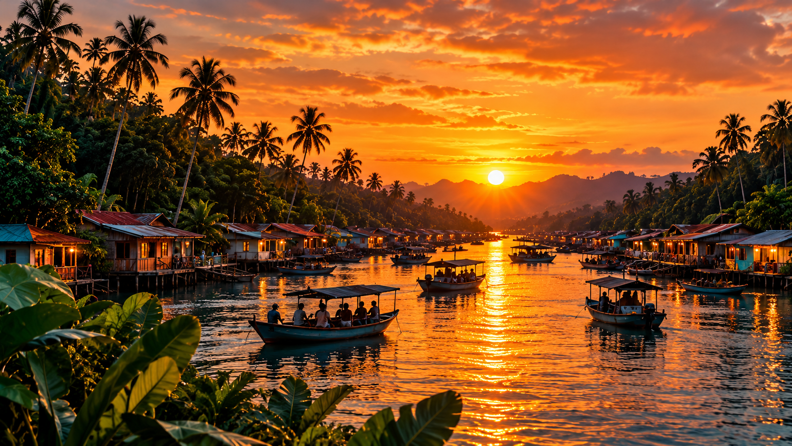
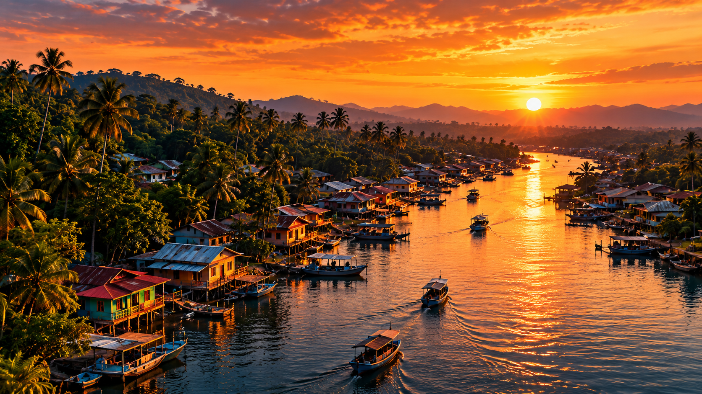
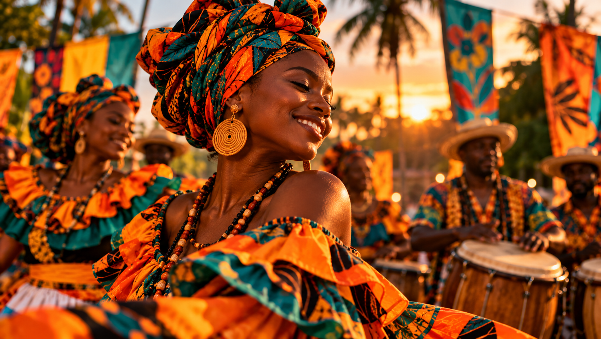

TERRITORIO
Naturaleza y río
Descubre los paisajes fluviales y la riqueza natural que caracterizan al Chocó.
 Ver programación →
Ver programación →

DESCUBRE EL CHOCÓ · COLOMBIA
Prepárate para vivir MÁREA y descubrir la naturaleza, los sabores y la riqueza cultural del Pacífico colombiano.
Descubre el territorio ↓PREPARA TU EXPERIENCIA
Aprovecha tu visita para conocer los paisajes, las tradiciones, la gastronomía y las expresiones culturales que hacen especial al Pacífico colombiano.
DESCUBRE Y DISFRUTA
Explora algunas de las experiencias que puedes disfrutar durante tu visita a Quibdó y al festival MÁREA.

TERRITORIO
Descubre los paisajes fluviales y la riqueza natural que caracterizan al Chocó.

GASTRONOMÍA
Acércate a los sabores tradicionales y a la diversidad de la cocina del territorio.

TRADICIÓN
Conoce las prácticas, los conocimientos y las tradiciones que hacen parte de la identidad cultural de la región.

CULTURA
Disfruta las expresiones artísticas y los espacios de encuentro que celebran la diversidad del Pacífico.
ANTES DE VIAJAR
Para disfrutar el festival con tranquilidad, ten en cuenta estas recomendaciones: